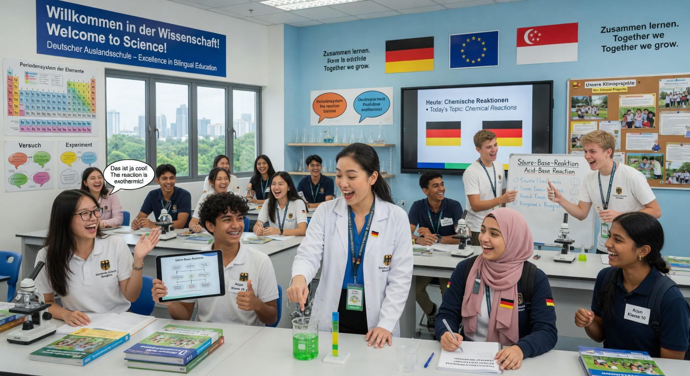
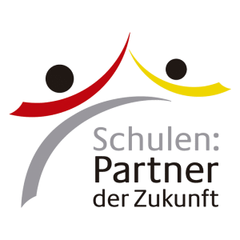

A modern, rigorous education that opens doors to top universities worldwide — and gives you a powerful advantage in Asia and Europe.
The Abitur (officially "Zeugnis der Allgemeinen Hochschulreife") is Germany's highest school-leaving certificate. It qualifies you for university studies in Germany and is recognized by universities around the world.
Completed in Germany. Extremely rigorous academic preparation across languages, sciences, mathematics, history and more. Direct entry to any German university.
Specially designed for German schools abroad. Combines the strength of the German curriculum with bilingual teaching (German + English and often the host language). You receive the same university access rights in Germany plus excellent international recognition — often together with a local high school diploma.
Both the German International Abitur (DIA) and the International Baccalaureate (IB) are world-class qualifications offered at many international schools. Here is a transparent comparison, especially for families connected to Germany or planning university studies there.
| Aspect | German Abitur / DIA | IB Diploma |
|---|---|---|
| University access in Germany | Direct entry with full Hochschulreife. Equivalent to a German Abitur. No Studienkolleg required for almost all programs. | Widely recognized but subject to individual university evaluation. Some programs or states may require higher points or additional assessments. |
| German language & career advantage | Core strength: high-level German + English (often host language too). Huge advantage for German companies and studying/living in Germany, Austria or Switzerland. | Excellent English-medium education with a second language. German is offered at some schools but not a central pillar of the qualification. |
| Cost of higher education in Germany | Public university semester fees are typically only €100–400 (often includes public transport). Abitur/DIA holders are generally treated as domestic students. | Base fees are the same, but in Baden-Württemberg non-EU students with IB may pay €1,500 per semester tuition (exceptions apply for some groups). |
| Curriculum & assessment | Deep specialization in 3–5 subjects with final written and oral Abitur examinations. Strong focus on independent work, structured writing and oral presentation. | Six subjects from different groups + core elements (Theory of Knowledge, Extended Essay, Creativity-Activity-Service). More breadth + holistic components. |
| Best for families who value... | Direct, low-cost access to Germany’s excellent public universities, German-language fluency, and careers with German/European companies in Asia and Europe. | Maximum subject flexibility and a very broad, inquiry-based international education for universities worldwide (especially English-speaking). |
Both qualifications open excellent doors. The Abitur/DIA is particularly powerful when Germany, German language skills, or cost-effective high-quality university education in Europe are priorities for your family.
Your Abitur or DIA is recognized for direct entry at German universities (including the world’s top technical universities) as well as excellent institutions across Europe, North America, the UK, Australia, and Asia. No foundation year required in most cases.
Germany is one of the world’s strongest economies. Thousands of German companies (Siemens, BMW, Bosch, SAP, BASF, Volkswagen and many more) are expanding rapidly across Asia. Bilingual graduates with an Abitur/DIA are highly sought after for roles in engineering, business, logistics, tech, and consulting.
The Abitur is known for its academic rigor. You learn how to analyze deeply, write structured arguments, conduct independent research, and defend your ideas orally. These skills are prized at every top university and in leadership roles later in life.
You become fluent in German (the language of Europe’s largest economy) and English, while living and learning in Asia. This combination is rare and extremely valuable for international careers and cultural fluency.
Living between cultures while following a structured, values-driven German curriculum helps you become independent, resilient, open-minded, and confident. You learn to see the world from multiple perspectives.
Join a network of 140+ German international schools and thousands of alumni across continents. Many graduates stay connected through the PASCH initiative and university programs in Germany.
Choosing the Abitur path through a German international school gives your child outstanding preparation while protecting your family from the enormous costs of many other international education routes.
Public universities in Germany charge little or no tuition — even for international students with an Abitur/DIA. Typical semester fees are only €100–€400 (often including a public transport ticket). Compare that to $30,000–$60,000+ per year elsewhere. Your child can attend world-class universities at a fraction of the cost.
The German curriculum emphasizes depth over breadth. Students study languages, sciences, mathematics, history, literature, and the arts at a high level. They graduate with strong character, discipline, and a genuine love of learning.
German international schools bring together German expat families, local families who value German education, and international families. Your child grows up bilingual and bicultural — comfortable in both Asia and Europe. This is a true cultural bridge that lasts a lifetime.
Graduates regularly gain places at elite institutions: TU Munich, LMU Munich, Heidelberg, ETH Zurich, Imperial College, Oxford, top US and Asian universities. The combination of rigorous academics + international experience is extremely attractive to admissions teams.
In today’s Asia, German companies are major investors and employers. A graduate who speaks German, understands German business culture, and holds a respected German qualification has a significant head start in careers across manufacturing, technology, automotive, pharmaceuticals, consulting, and logistics.
You are giving your child one of the world’s most respected secondary qualifications while they remain in a familiar, high-quality school environment close to home. It is education with both excellence and security.
Asia and Germany are growing closer economically and culturally. The young people who can move confidently between both worlds will have the greatest opportunities.
Deutsche Auslandsschulen (German Schools Abroad) following German curriculum standards and offering the Abitur or DIA exist in many major Asian cities.


All information is for guidance only. Please verify current details with the ZfA, your school, and official university admissions offices.
“The DIA gave me direct admission to TU Munich for engineering. Studying in both German and English at school made the transition to university in Germany surprisingly smooth. I now work in Singapore for a German automotive supplier — my language skills were the deciding factor.”
“As parents we were worried about the cost of university. With the Abitur our daughter was accepted at three excellent German universities with almost no tuition fees. The education she received in Jakarta was outstanding — rigorous but caring. Best decision we ever made.”
“I didn’t realize how valuable German would be. I’m now doing a dual degree in business and German at a top university in Europe while interning with a logistics company that has huge operations in Southeast Asia. The Abitur network helped me find opportunities I never imagined.”
These are example stories. We encourage schools to replace them with authentic quotes from your own students and families.
Whether you are a student curious about your options or a parent exploring the best path for your family — we’re here to help.
Reach out to your school’s Abitur or university guidance counselor, or use the form to ask general questions. We are happy to connect you with the right people.